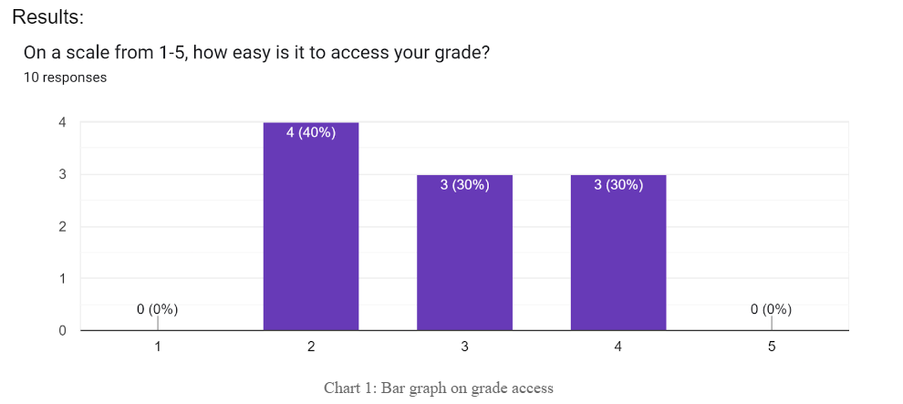

Audit Protocols and Summary
Protocol for Usability Audit
To address the issues with the IIT portal, our research relied on observations and student sentiment. Surveys were used to gather feedback from students, aiming to assess satisfaction levels, identify common challenges, and suggestions for improvement. Once prioritized improvement areas were received from the survey, structured interviews were to be conducted based on the usability issues identified in the portal without the need of large-scale surveys or interviews. We reached out to our peers from different classes to participate in our survey. We informed them that the survey focuses on assessing the usability and appearance of the student portal. The form consists of questions that ask to rank and explain the user’s experience with the portal. This attitudinal approach serves as a self-reported method, where we ask and listen to the user responses. In addition to surveys, structured interviews were conducted. Participants were encouraged to navigate to the portal and identify areas they found problematic. Due to FERPA limitations, we refrained from asking personal questions such as grades, accommodation, and accounting services. Participants were invited to share their experiences and stories to receive qualitative data.
Summary of Results from Usability Audit
Users were asked about their experience using the IIT Student Portal. The majority expressed negative feelings with responses ranging from “Hate it” to “Sometimes positive, but hard to navigate” while a low number of students found it “good”. Subsequently, participants were asked “On a scale from 1-5, how easy is it to assess your grade?”, where 1 represents “extremely difficult” and 5 indicates “extremely easy”. The sample mean was 2.9, with a standard deviation of 0.83, suggesting a moderate level of likeability to the current interface.
Next, a yes or no question was asked, “Have you ever found a link that is not working”. It was found that 66.7% of our sample encountered non-functioning links.

The question “How often do you use your Student Portal? (estimate times per week)” was asked. The collected data demonstrated a heavy skew, the frequency of portal usage per week was a mean of 3 and a standard deviation of 2.4. However, what was interesting was that the median of the data was only 2. With the median being smaller than the mean, it further proves the data is skewed to the left. From the skewness we can summarize that the majority of students don't visit their student portal throughout the week.

\Next we asked, “Are there any improvements you would make to the Student Portal?”, the answers ranged from, “Delete old links that aren't being used anymore and update UI so it's less tedious to navigate through the different sections of the portal.”, “Not sure.”, “Make grades more clear (as a requirement for teachers opposed to waiting the week of finals). Make academic resources up to date and forms easier to find”, and “a grade calculator feature would be nice”. Finally, participants were asked to rate their satisfaction with the UI on a scale from 1 to 5, with 1 indicating dissatisfaction and 5 indicating satisfaction. The mean was 2.3, with the standard deviation of 0.78. From looking at the mean, we can conclude that students are generally dissatisfied with the current IIT Student Portal UI.

In the structured interviews, users expressed frustration with redundant links. When navigating through the portal, most of the participants mentioned the lack of navigation pathways. Participants found it difficult to know where to find a specific section. Many stated feeling overwhelmed by the abundance of options presented. Additionally, participants indicated the need for labeling of sections, since many have to navigate through multiple menus or pages.